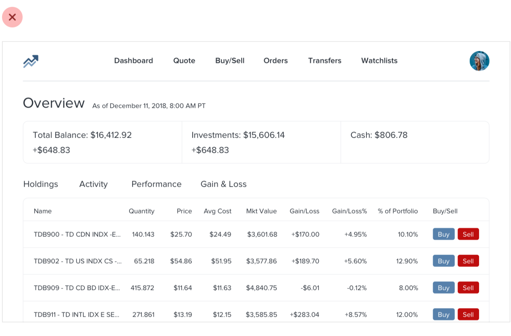
Hierarchy is Everything
わかりやすさは、どこから来るのか
デザインチーム定例 2026.09.18 毛 佳倩
ユーザーが使い方に迷ったら、それはユーザーのせいじゃない。
学生のころ、まわりでよく言っていた言葉です。
What matters most
操作も、体験も、満足も、全部そのあとに来る。
わからなければ、そもそも何も始まらない。
The point
自分の中で「何が主役か」が決まっていない画面は、
どう並べ替えても、必ず平らになる。
大きさ
太さ・濃さ
誰でも最初に思いつく2つ。
でもこれだけだと、画面は「全部が主張する」状態になる。
本当に効くのは、この4つ。
01 すべてを同じ強さにしない
02 脇役を弱める
03 ラベルを見直す
04 意味と見た目を分ける
01 — Not all equal
画面の中身が全部おなじ強さで目に入ってくると、
どこを見ればいいのかわからなくなる。
貼り紙だらけの壁と同じ。
レビュー前の自問
この画面で、
一番先に見てほしいものはどれ？

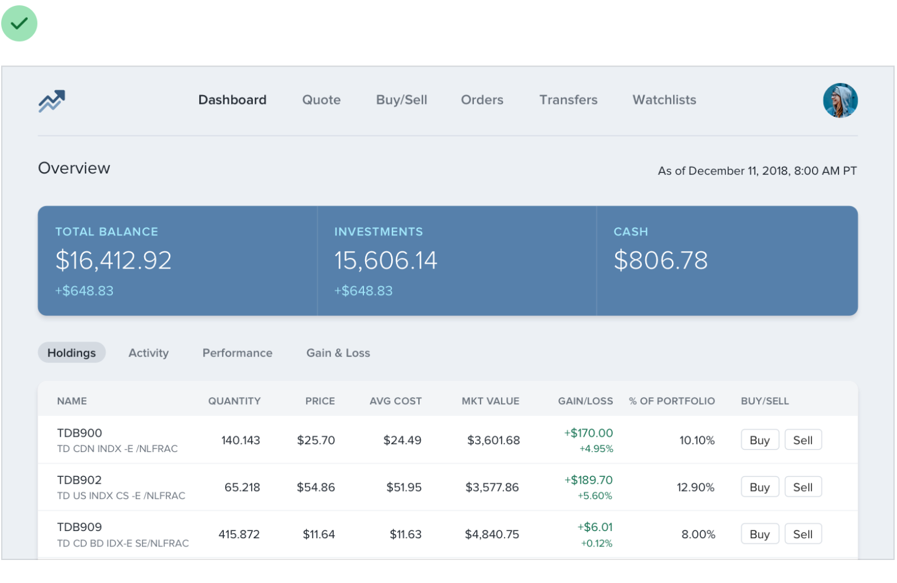
02 — De-emphasis
強調とは、強くすることじゃない。
まわりのトーンを落とすこと。
レビュー前の自問
この画面で、
弱めていい要素はどれ？
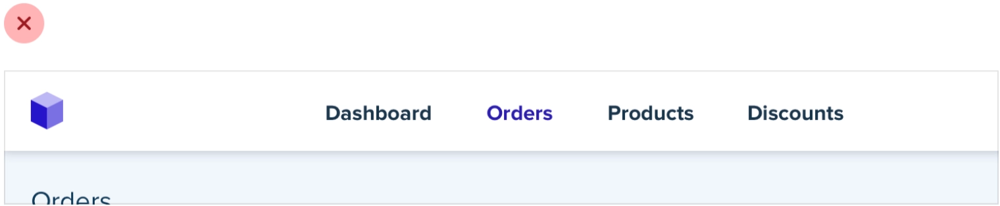
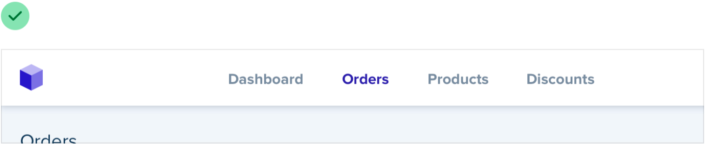
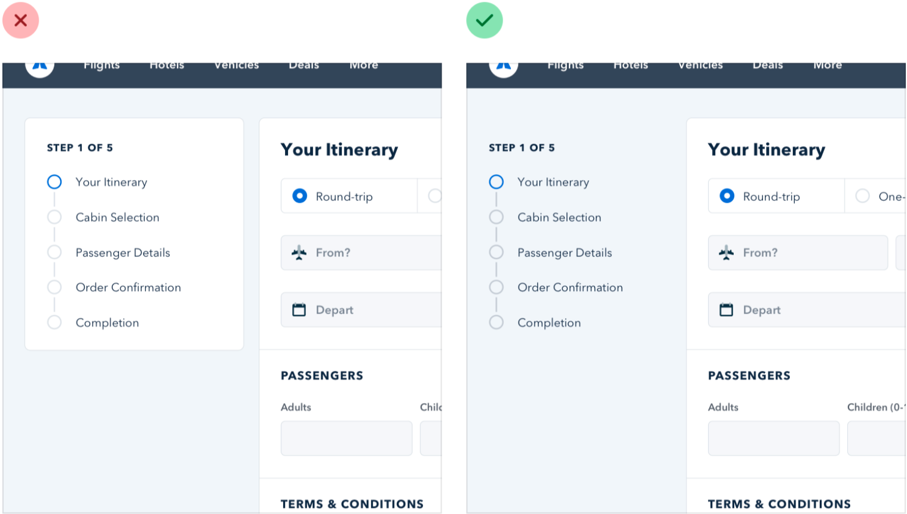
03 — Labels
「開始時刻：14:00」より、「14:00」。
見ればわかるものに、名前はいらない。
レビュー前の自問
このラベル、
消しても意味は伝わる？
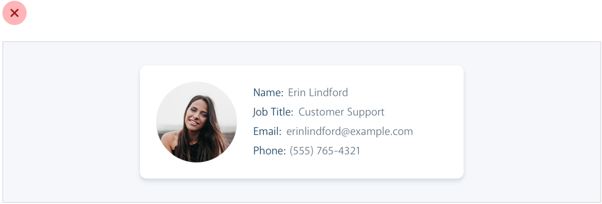
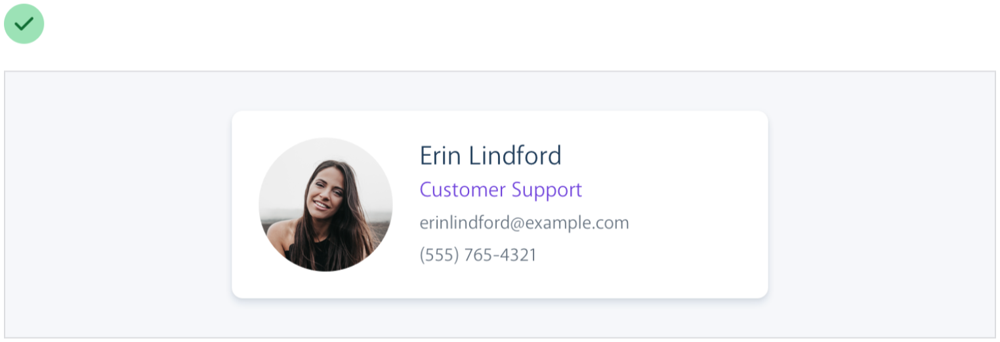
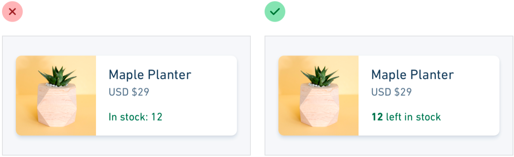
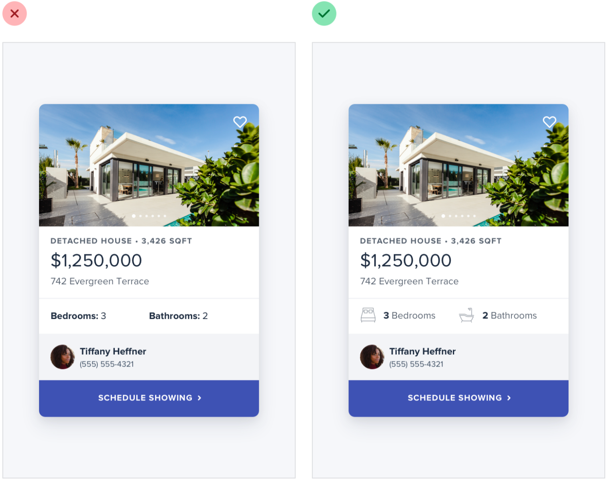
03 — But not always
仕様表のように情報が密な画面では、ユーザーは「厚さ」を探してから「7.6mm」を見る。
ラベルのほうが、探すための手がかりになる。
このとき数値を薄くしすぎないこと。どちらも大事な情報。
レビュー前の自問
ユーザーは値を読みに来た？
それとも項目を探しに来た？
ここに実例
仕様表のように、項目を探しに来る画面
04 — Semantics
「削除」は機能的に重い。
でも、見た目まで主役にする必要はない。
レビュー前の自問
重要な機能＝目立たせる、
になっていない？
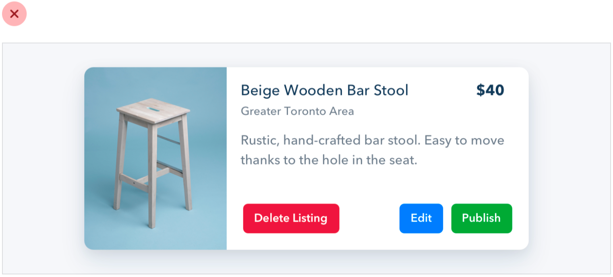
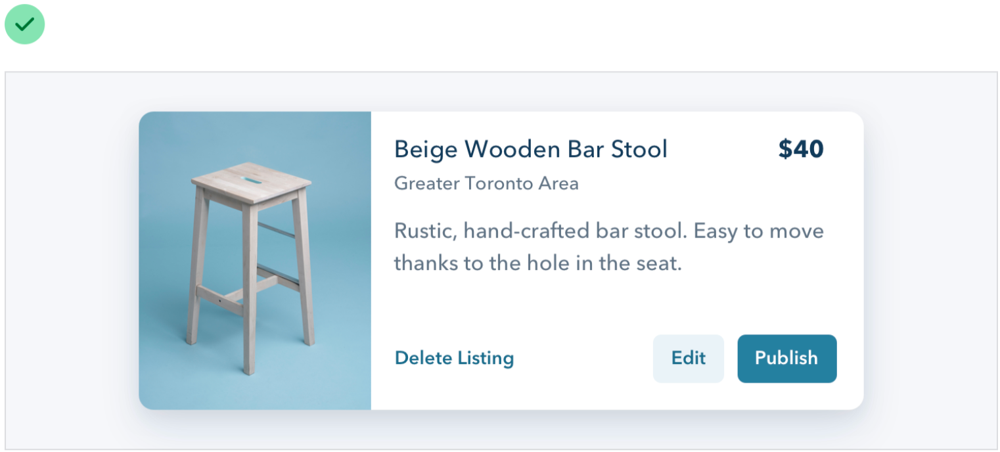
階層は、デザイナーが最初にやる仕事だと思っています。
自分が理解できていないものは、誰にも伝わらないので。
ありがとうございました